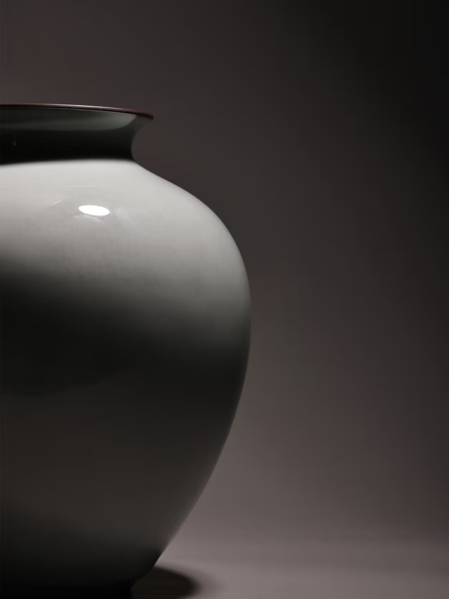
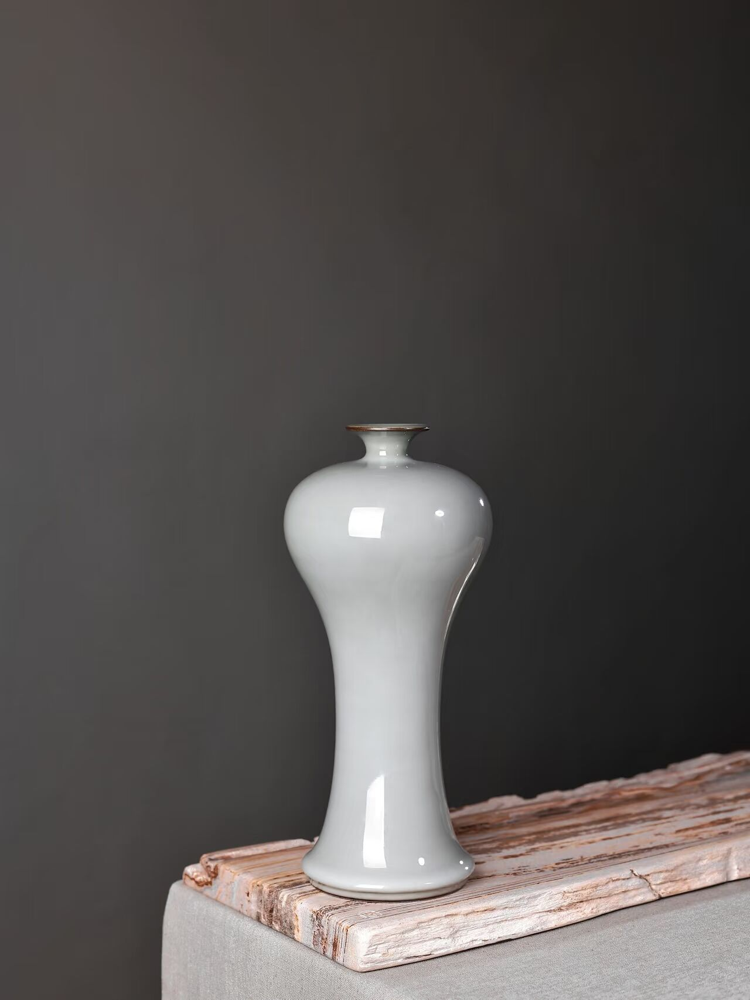
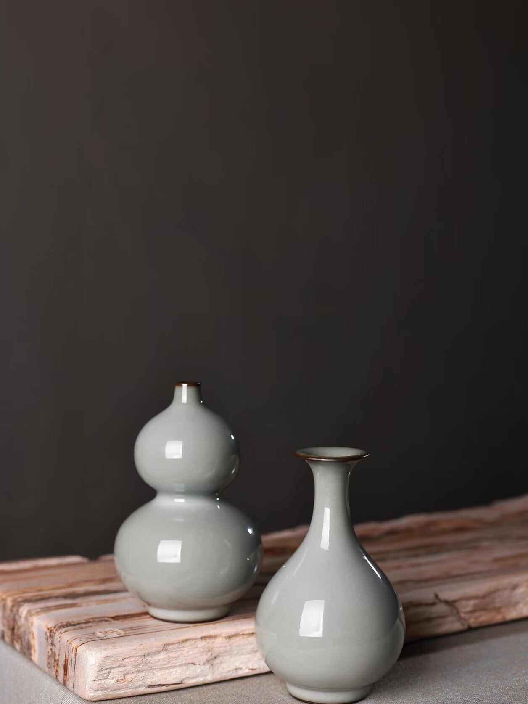

官窑简介
官窑是宋代宫廷垄断的御用瓷窑，民间严禁使用，分为北宋官窑和南宋官窑：北宋官窑窑址推测位于汴京（今河南开封），窑址尚未明确；南宋官窑窑址在临安（今浙江杭州），分郊坛下官窑和修内司官窑，烧造年代始于北宋晚期，鼎盛于南宋，代表了宋代官窑制瓷的最高水平。
其造型多仿古礼器，如贯耳瓶、琮式瓶、三足炉等，风格端庄大气，品类以礼器和陈设瓷为主；胎色深灰或紫黑，胎体厚重，采用“薄胎厚釉”工艺，多次施釉后釉层厚度甚至超过胎体，釉面温润莹澈；烧造采用二次烧成法，装烧方式兼用支钉和垫饼，釉面自然开片形成“冰裂纹”，器物以素面为主，极少装饰纹饰。
悬停放大查看细节


